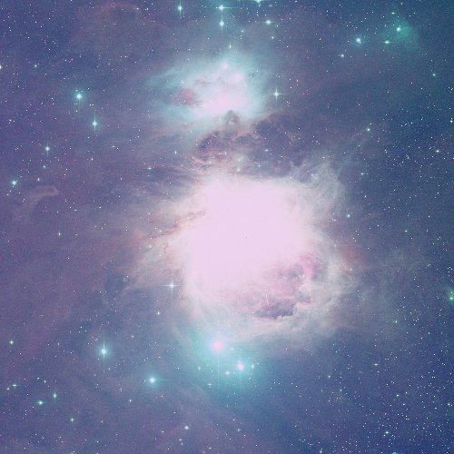

目次
はじめに : 冬は寒いが星は見ごろ神話で見る星座たち
星雲, 銀河
冬は寒いが星は見ごろ
冬の星座は一等星が多いことで知られています。ベテルギウス, シリウス, プロキオン, ポルックス, カペラ, アルデバラン, リゲル そして カノープス
冬の大三角とカノープス(師崎にて撮影)
冬のダイヤモンド(師崎にて撮影)
冬のダイヤモンド(豊明市内で撮影)

この時期は昼間が短いので、たくさんの星座を見ることができます。
明け方には春の星座と夏の星座が見えます。
うしかい座(アークトゥルス), おとめ座(スピカ)とさそり座(アンタレス)
夏の大三角
日の出前には金星が見えます
神話で見る星座たち(オリオン座)
1. オリオン座とさそり座の「因縁」ギリシャ神話では、オリオンは乱暴者の狩人で「私は世界最強の狩人だ!!」と言ったところ、
「ねたみの女神ヘラ」の耳に入り、嫌がらせに「さそりにオリオンを襲わせた」そうです。
(危ないので、よいこは絶対マネしないでね!!)
その後・・・どちらも星座になりましたが、この時期は夕方にオリオン座, 明け方にさそり座が見えます。
オリオンはさそりが顔を出さない時間に顔を出すようになったとのことです。
豊明市内で撮影したオリオン座(2/10 午後7時ごろ)

豊明市内で撮影したさそり座(2/11 午前5時ごろ)
2. オリオン座と白道(月の通り道)
オリオン座にはもう一つ、「悲しい恋の神話」もあります。
狩猟の達人：オリオンはある日、狩猟の女神：アルテミスに出会い、いっしょに狩をするようになりました。
ところが、アルテミスの兄で太陽の神：アポロンはこれをよく思っていませんでした。
ある日、オリオンが頭だけ出して海を渡っている時のこと・・・
アポロンはアルテミスに遠くにいるオリオンを指してこう言いました・・・
「あれを見てよ、鹿かな？馬かな？アルテミスでもあんなに遠くの獲物は仕留められないよね？」
(危ないので、よいこは絶対マネしないでね!!)
それがオリオンだとも知らないアルテミスは自慢の狩の腕で、獲物に向けて矢を放ちました。
みごとに命中・・・しかし、それはオリオンの頭だったのです。
悲しんだアルテミスは、オリオンを天の月の通り道に星座にしてほしいとゼウスに頼みました。
アルテミスは月の女神でもあったのです。
星雲・銀河
星は「核融合反応」により輝き始めます。この世の物質の全ては「原子」と呼ばれる小さな粒、さらにプラスの電気を持った「原子核」とマイナスの電気を持った「電子」でできています。
この「原子核」や「電子」は私たちの身の回りでは何も変化しない非常に小さな粒ですが、星が輝くときには「原子核」がくっついて新しい「原子核」ができるようになります。
新しい原子核ができるときに非常に強い光と熱が発生します。これが核融合反応です。
散光星雲
核融合を始める前の星雲ガスの集まりです。
散開星団(プレアデス星団)
超新星残骸(かに星雲)
超新星爆発の残骸です。超新星爆発では「原子核」と「電子」がくっついて「中性子星」ができます。銀河系とブラックホール
ブラックホールも超新星爆発によってできると考えられています。ブラックホールを中心にした星の集まりが銀河系であると考えられています。
M87とその中心にあるブラックホール